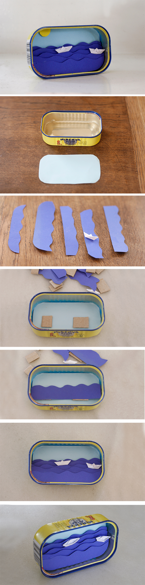
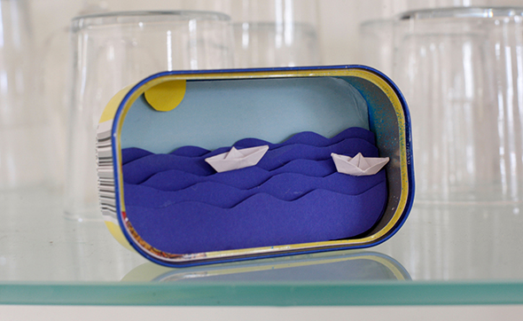

Eine Sardinendose voller Meer. Dazu braucht man nur farbiges ( blaues und weisses) Papier, Karton. Für den Himmel kann man die Dose auf das hellblaue Papier legen und als Schablone benutzen. Das Gleiche macht man mit dem dunkel blauen Papier, wobei nur die letzte Meeresschicht die Form der Dose haben muss. In die verschiedenen Schichten dunkelblaues Papier schneidet man die Wellen. Man klebt die Wellen in die Dose mit kleinen Kartonstücken als Abstandshalter. Aus weissem Papier macht man winzige Origamiboote und eine gelbe Sonne kann man auch aufkleben! Vitti! Danke für die schöne Dose, mal gucken was wir in die Anderen kleben!
Una lata de sardinas llena mar. Para ello, hace falta papel de color (azul y blanco), cartón. Para hacer el cielo se puede utilizar la caja como plantilla. Lo mismo hay que hacer con el papel azul oscuro, sólo la última capa marina tiene que tener la forma de la lata. En las diferentes capas de papel azul oscuro se cortan las olas. Se pega las olas en la caja con pequeños trozos de cartón como espaciadores. Con el papel blanco tienes que intentar hacer unos barcos de origami minúsculo y un sol amarillo también se puede añadir! Vitti! Gracias por la lata tan bonita, vamos a ver lo que vamos a pegar dentro en los demás!
A sardine can filled with sea. For this you need colored (blue and white) paper, cardboard. For the sky you can put the box on the light blue paper and use as a template. The same you do with the dark blue paper, where only the last marine layer must have the shape of the can. In the different layers of dark blue paper cut the waves. Stick the waves in the box with small pieces of cardboard as spacers. With white paper make some tiny origami boats and with yellow paper you can make a sun! Vitti! Thanks for the nice can, let's see what we stick in the others!
